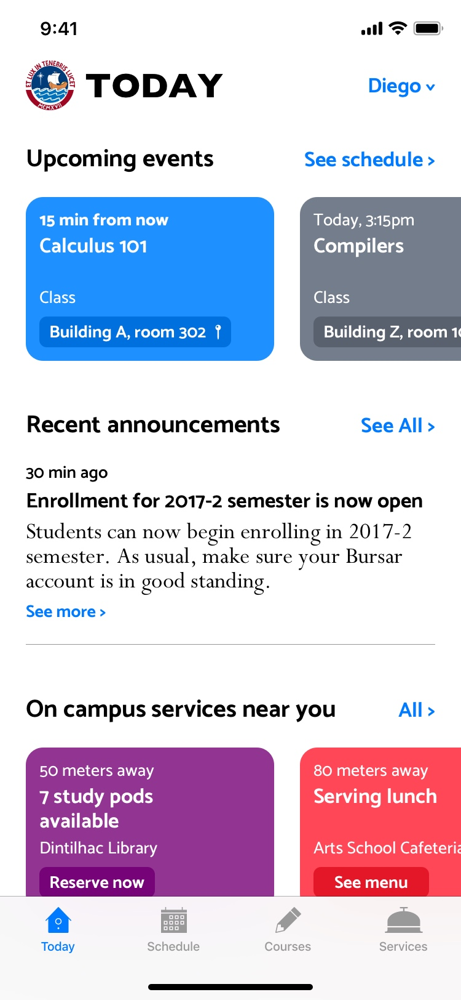

<header id="indexHeader">
	<hgroup>
		<h1>
			Designing
		</h1>
		<h1>
			with empathy.
		</h1>
	</hgroup>
</header>


<section id="indexProjectsSection">
	<article id="bmwProjectArticle">
		<div class="projectShadowDiv">
			<svg viewBox="0 0 593 460" version="1.1" xmlns="http://www.w3.org/2000/svg" xmlns:xlink="http://www.w3.org/1999/xlink" overflow="visible">
				<defs>
					<filter x="-20.6%" y="-26.6%" width="141.3%" height="153.2%" filterUnits="objectBoundingBox" id="filter-1">
						<feGaussianBlur stdDeviation="40.8" in="SourceGraphic"></feGaussianBlur>
					</filter>
				</defs>
				<g id="bmwShadow-Copy" stroke="none" stroke-width="1" fill="none" fill-rule="evenodd" opacity="0.45">
					<rect id="Rectangle" fill="#012648" filter="url(#filter-1)" x="0" y="0" width="593" height="460"></rect>
				</g>
			</svg>
		</div>

		<iframe src="https://player.vimeo.com/video/481509807?autoplay=1&loop=1&background=1" width="1920" height="1080" frameborder="0" allow="autoplay; loop"></iframe>
		<a href="BMW-Kiosk">
		</a>
		<footer>
			<h1>
				Enter
			</h1>
		</footer>
	</article>

	<article id="sunyProjectArticle">
		<div class="projectShadowDiv">
			<svg viewBox="0 0 271 545" version="1.1" xmlns="http://www.w3.org/2000/svg" xmlns:xlink="http://www.w3.org/1999/xlink" overflow="visible">
				<defs>
					<filter x="-38.0%" y="-18.9%" width="176.1%" height="137.8%" filterUnits="objectBoundingBox" id="filter-1">
						<feGaussianBlur stdDeviation="34.36" in="SourceGraphic"></feGaussianBlur>
					</filter>
				</defs>
				<g id="sunyShadow-Copy" stroke="none" stroke-width="1" fill="none" fill-rule="evenodd" opacity="0.45">
					<rect id="Rectangle" fill="#2D2200" filter="url(#filter-1)" x="0" y="0" width="271" height="545"></rect>
				</g>
			</svg>
		</div>
		<iframe src="https://player.vimeo.com/video/481545078?autoplay=1&loop=1&background=1" width="640" height="1138" frameborder="0" allow="autoplay; loop"></iframe>
		<a href="Suny">
		</a>
		<footer>
			<h1>
				Enter
			</h1>
		</footer>
	</article>

	<article id="pucpProjectArticle">
		<div class="projectShadowDiv">
			<svg viewBox="0 0 270 668" version="1.1" xmlns="http://www.w3.org/2000/svg" xmlns:xlink="http://www.w3.org/1999/xlink" overflow="visible">
				<defs>
					<filter x="-38.3%" y="-15.5%" width="176.6%" height="131.0%" filterUnits="objectBoundingBox" id="filter-1">
						<feGaussianBlur stdDeviation="34.46" in="SourceGraphic"></feGaussianBlur>
					</filter>
				</defs>
				<g id="pucpShadow" stroke="none" stroke-width="1" fill="none" fill-rule="evenodd" opacity="0.45">
					<rect id="Rectangle" fill="#002D23" filter="url(#filter-1)" x="0" y="0" width="270" height="668"></rect>
				</g>
			</svg>
		</div>
		<picture>
			
		</picture>
		<a href="PUCP-Movil">
		</a>
		<footer>
			<h1>
				Enter
			</h1>
		</footer>
	</article>
</section>